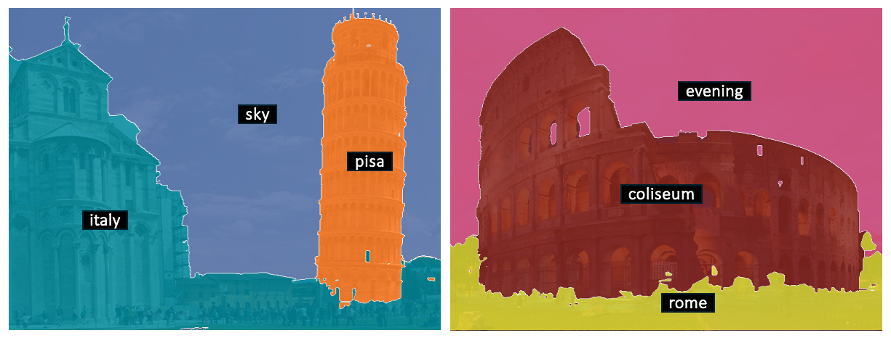
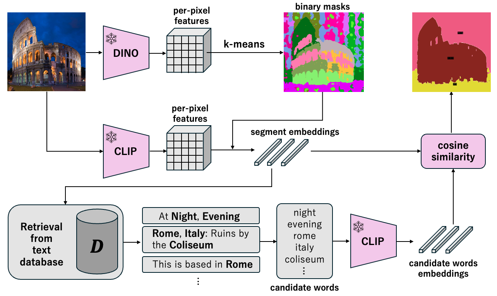
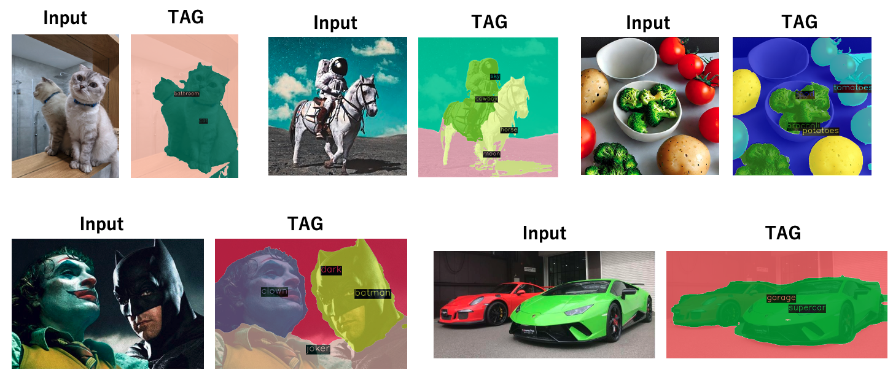

TAG: Guidance-free Open-Vocabulary
Semantic Segmentation
- Yasufumi Kawano
Keio University - Yoshimitsu Aoki
Keio University

Abstract
Semantic segmentation is a crucial task in computer vision, where each pixel in an image is classified into a category. However, traditional methods face significant challenges, including the need for pixel-level annotations and extensive training. Furthermore, because supervised learning uses a limited set of predefined categories, models typically struggle with rare classes and cannot recognize new ones. Unsupervised and open-vocabulary segmentation, proposed to tackle these issues, faces challenges, including the inability to assign specific class labels to clusters and the necessity of user-provided text queries for guidance. In this context, we propose a novel approach, TAG which achieves Training, Annotation, and Guidance-free open-vocabulary semantic segmentation. TAG utilizes pre-trained models such as CLIP and DINO to segment images into meaningful categories without additional training or dense annotations. It retrieves class labels from an external database, providing flexibility to adapt to new scenarios. Our TAG achieves state-of-the-art results on PascalVOC, PascalContext and ADE20K for open-vocabulary segmentation without given class names, i.e. improvement of +15.3 mIoU on PascalVOC.
Method
TAG can partition images into semantic segments and label each segment with open-vocabulary categories. First, TAG identifies segment candidates using per-pixel features obtained from DINOv2. Then, it acquires representative segment embeddings for segment candidates using per-pixel features from a ViT pre-trained with CLIP. Finally, the categories are assigned to each candidate segment by retrieving the closest matching sentence from an external database. Note that the input is only the image, with no need to input category candidates as guidance.

Results
We show open vocabulary semantic segmentation results.

Please refer to our paper for more details.
Citation
@inproceedings{kawano2024maskdiffusion,
title={{TAG: Guidance-free Open-Vocabulary Semantic Segmentation}},
author={Yasufumi Kawano and Yoshimitsu Aoki},
year={2024},
}
Acknowledgements
The website template was borrowed from Mip-NeRF 360.